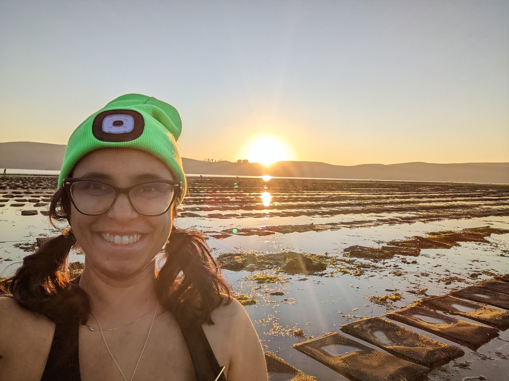

Does thermal history influence the tolerance of Pacific oysters (Magallana gigas) to marine heatwaves and temperature-associated diseases?
For my PhD research in Dr. Ted Grosholz's lab at UC Davis, I studied how
warming and the temperature-associated disease, Ostreid herpesvirus (OsHV-1) affect the farmed Pacific oyster Magallana (= Crassostrea) gigas. I was also interested in seeing if
priming oysters to warmer temperatures influences M. gigas' response to OsHV-1.
In The News
Running Boot Camps For Oysters TO Train Them For A Warming World | CaliforniaSea Grant [August 2022]
Russia’s unfrozen Laptev Sea is not the only warning sign of climate change | California Aggie [November 2020]
Oceans Under a Changing Climate | UC Davis Unfold Podcast [October 2020]
Warming oceans could mean bad news for oyster aquaculture | UC Davis Coastal & Marine Science Institute [August 2020]
Collaborators
Dr. Colleen Burge, Research Scientist Supervisor at California Department of Fish and Wildlife
Dr. Sarah Nancollas
Marcela Prado Zapata, Research Technician, Shellfish Pathology Lab, Bodega Marine Laboratory
Serina Moheed, PhD Student in Ecology, Brown and Stachowicz Labs
Nate Bossier, Santa Rosa Junior College-BML Intern & Undergraduate Student at UC Berkeley
Tenzing Sherpa, Santa Rosa Junior College-BML Intern & Undergraduate Student at UC Berkeley
Hog Island Oyster Company
Bodega Bay Oyster Company
Tomales Bay Oyster Company
Funding
UC Davis Dissertation Year Fellowship
California Sea Grant Graduate Research Fellowship
National Science Foundation Sustainable Oceans Research Traineeship
Graduate Group in Ecology Fellowship
Russell J. and Dorothy S. Bilinski Fellowship at Bodega Marine Lab
Dennis and Patricia Salisbury Graduate Student Award
Jastro & Shields Graduate Research Award